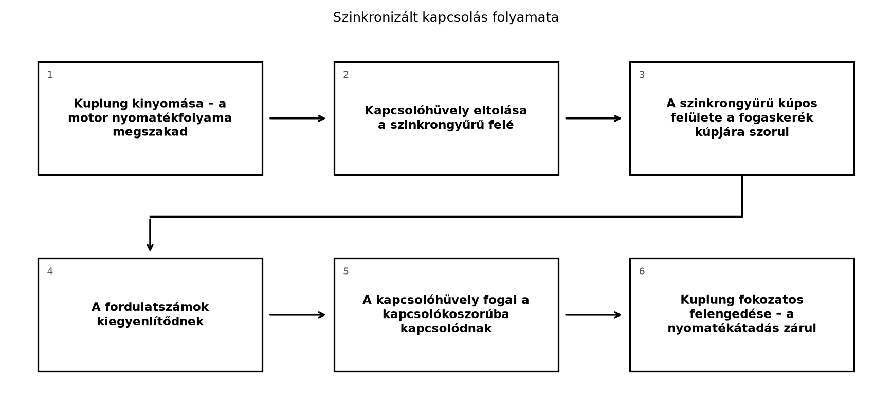

Az autószerelő műhelyben az egyik leggyakoribb váltóhiba úgy jelentkezik, hogy az ügyfél elmondja: „hidegen recseg a kettes fokozat”, „nehéz bevenni a hármast”, vagy „kettesből visszaváltva megcsúszik, mintha kiugrana a fokozat”. A hiba mögött legtöbbször a kézi kapcsolású nyomatékváltó fogaskerékpárjainak, kapcsolóelemeinek vagy éppen a szinkronszerkezetnek a kopása áll. Ahhoz, hogy a szerelő meg tudja állapítani, melyik fokozat, melyik tengely és melyik kapcsolóelem hibás, először pontosan értenie kell a váltó felépítését, a fokozatok kapcsolásának mechanikáját és a fokozatáttétel számítását.
A gépkocsi hajtásláncában a belső égésű motor forgatónyomatéka önmagában ritkán elegendő minden járműállapot lefedésére: induláskor nagy vonóerő kell alacsony sebességen, autópályán pedig nagy sebesség kell mérsékelt motorfordulatszámon. A kézi kapcsolású nyomatékváltó erre a feladatra való: a motor és a hajtott kerekek közé fokozatosan változtatható áttételt iktat.
Képzelj el egy hosszmetszetben felvágott, ötfokozatú kézi váltót. A ház bal oldalán a tengelykapcsoló felől érkező bemenő tengely (primer tengely) látszik, rajta az állandóan kapcsolódó, kis fogaskerékkel. A ház jobb oldalán a kimenő tengely (szekunder tengely) fut, amely a hajtómű kimenetét továbbítja a kardántengely vagy a féltengelyek felé. A bemenő tengely alatt, vele párhuzamosan egy melléktengely (lay shaft) helyezkedik el, amelyen a különböző fokozatok fogaskerekei ülnek. A fokozatok kapcsolásakor egy kapcsolóhüvely tolódik el a kimenő tengely bordázatán, és a kiválasztott fogaskerék kapcsolókoszorújához kapcsolódik. A hüvely előtt szinkrongyűrű van, amely először súrlódással kiegyenlíti a forgó fogaskerék és a tengely fordulatszám-különbségét, majd a hüvely fogai a kapcsolókoszorúba kapcsolódnak. Ugyanezt a kapcsolási folyamatot szemlélteti az alábbi technológiai vázlat:

Definíció. A kézi kapcsolású nyomatékváltó (manual transmission; „kézi váltó”) olyan fogaskerekes hajtómű, amelyben a vezető választja ki a fokozatot, és mechanikus kapcsolóelemekkel – tolófogaskerékkel, kapcsolóköremmel vagy kapcsolóhüvellyel – köti össze a kiválasztott fogaskerékpárt, ezzel megváltoztatva a kimenő tengely fordulatszámát és nyomatékát.
Definíció. A fokozat áttétele egy fokozatpár esetén a hajtott (nagyobb) fogaskerék fogszáma osztva a hajtó (kisebb) fogaskerék fogszámával:
Itt a bemenő, a kimenő fordulatszám, a kimenő oldali, a bemenő oldali fogaskerék fogszáma. Több fokozatpár esetén a rész-áttételek szorzódnak:
Az ideális nyomatékáttétel az áttétel reciprokjával arányos; veszteség nélkül:
A valóságban a fogaskerék- és csapágysúrlódás miatt a kimenő nyomaték kisebb:
ahol a fokozat hajtásláncának hatásfoka, kézi váltónál jellemzően (ellenőrizendő: a gyártói adat). A nyomatékváltóban beépített fogaskerékpárok áttétele mindig a fogszámokból számolható, a modul (fogméret) nem befolyásolja az áttételt.
Összefüggés. Az előző fejezetben Menetellenállások és teljesítményszükséglet és Vonóerő-diagram, menetteljesítmény-diagram és áttételválasztás alfejezetben bevezetett teljes hajtáslánc-áttétel itt bomlik szét:
A váltó fokozatáttétele tehát a motor és a kerék közötti teljes áttétel egyik tényezője. Ezt a fokozatáttételt használjuk később a Bolygóművek és a hidrodinamikus nyomatékváltó alfejezetben a bolygóműves fokozatok és a Kardánhajtás, csuklók és féltengelyek alfejezetben a féltengely-áttételek értelmezésekor.
A belső égésű motor csak szűk fordulatszám-tartományban ad le megfelelően nagy nyomatékot, és alapjáraton nem tud nagy vonóerőt kifejteni. A váltó feladata:
A korai kézi váltókban nem volt szinkronszerkezet. A kapcsolás két fő módon történt:
Megjegyzés. A régi járműveken, például haszongépjárművek váltójában gyakran találkozol kapcsolókörmös, nem szinkronizált fokozatokkal. A tanuló a mai szinkronizált váltót is könnyebben érti meg, ha tudja, hogy a szinkronszerkezet tulajdonképpen ezt a kézi fordulatszám-egyeztetést váltja ki súrlódó elemmel.
A modern kézi váltó általában kapcsolóhüvelyes, vagyis a fokozatok fogaskerekei állandóan együtt forognak, és a kimenő tengely bordázatán eltolható kapcsolóhüvely kapcsolódik a választott fokozat kapcsolókoszorújához. A hüvelyt váltóvillák mozgatják, a villák pedig a váltókar és a váltóvilla-rúd segítségével tolódnak. A fokozatváltás pontos és biztonságos sorrendjét a váltóreteszelés – például golyós vagy lemezes retesz – biztosítja, hogy egyszerre csak egy fokozat legyen kapcsolható.
A hajtáslánc építési helyétől függően két alapelrendezést különböztetünk meg:
Az ábrán a bemenő tengely fogaskerekei a tengelyhez rögzítettek, a kimenő tengely fogaskerekei csapágyon szabadon futnak. A kapcsolt fokozatban a kapcsolóhüvely a szabadon futó kereket a kimenő tengelyhez köti: a nyomaték a bemenő tengelyről a fokozatpáron, a hüvelyen és a kimenő tengelyen át a tengelyhajtás tányérkerekére jut. Hátramenetben a közbenső kerék fordítja meg a forgásirányt. A HTML-változatban a fokozat kiválasztásakor a nyomatékút, az áttétel és a kimenő, illetve kerékfordulatszám jelenik meg (az áttételek szemléltető tanulási adatok).
Definíció. A direkt fokozat a váltó azon fokozata, amelyben a bemenő és a kimenő tengely közvetlenül, fogaskerékáttétel nélkül kapcsolódik, így . A közvetett (indirekt) fokozat minden olyan fokozat, ahol a nyomatékátvitel fogaskerékpáron vagy párhuzamos tengelyen keresztül történik, így .
A váltó legfontosabb kapcsolóeleme a szinkronszerkezet. Feladata, hogy a kapcsolandó fogaskerék és a tengely fordulatszámát a kapcsolás pillanata előtt kiegyenlítse, így a kapcsolóhüvely fogai recsegés nélkül tudnak a kapcsolókoszorúba csúszni.
A legegyszerűbb kúpos szinkronszerkezet fő részei:
Kapcsoláskor a váltóvilla a hüvelyt a fokozat felé tolja. A hüvely először a szinkrongyűrűt nyomja rá a fogaskerék kúpos felületére. A fellépő súrlódási nyomaték elkezdi a fogaskerék fordulatszámát a tengely fordulatszámához közelíteni; amíg fordulatszám-különbség van, a súrlódási nyomaték a gyűrűt elfordulva tartja, és a gyűrű zárófogai elzárják a hüvely útját. Amikor a két fordulatszám kiegyenlítődött, a súrlódási nyomaték megszűnik, a gyűrű elfordul, a hüvely a zárófogakon átcsúszik a kapcsolókoszorúra, és ezzel a fokozat kapcsolt állapotba kerül.
Az ábra felső sora a hüvely, a szinkrongyűrű és a kapcsolókoszorú fogait síkba kiterítve mutatja: előszinkronizáláskor a kúpsúrlódás a gyűrűt kb. fél fogosztásnyit elfordítja, így a gyűrű zárófogai a hüvely fogaival szemben állnak, és amíg a fordulatszám-különbség meg nem szűnik, a hüvely nem juthat tovább; esetén a hüvely visszafordítja a gyűrűt, és átcsúszik a koszorúba. Az alsó sor a kúpot és a gyűrű–koszorú hézagot mutatja: kopáskor a gyűrű mélyebbre ül a kúpon, ezért a hézag csökken (példa: 1,2 mm újonnan, 0,2 mm kopottan; a határérték gyártói adat, ellenőrizendő). A HTML-változat lépésenként játssza le a fázisokat a fordulatszám-különbség időbeli lefutásával, majd a kopott gyűrű recsegését.
A többkúpos szinkronszerkezet – például két- vagy háromkúpos – nagyobb súrlódó felületet biztosít kisebb átmérőn. Ez rövidebb szinkronidőt, kisebb kapcsolóerőt és jobb hidegüzemi komfortot ad, ezért az alsó fokozatokban gyakran ilyeneket építenek be. A szinkrongyűrűk jellemzően sárgarézből vagy más, kedvező súrlódási és kopási tulajdonságú anyagból készülnek, a felületük pedig finom rovátkolt vagy olajhornyolt kivitelű, hogy a váltóolaj ne csökkentse a súrlódást. A pontos anyag és kivitel gyártói adat (ellenőrizendő).
Nagyobb haszongépjárműveknél és terepjáróknál a váltó mögé vagy elé szorzóváltót (range-splitter, osztómű) építenek. A szorzóváltó egy további fogaskerékpárt tartalmaz, amely a főváltó fokozatait két csoportra osztja: például terep/lassú és közúti/gyors tartományra. Így egy 4 fokozatú alapváltóból 8 előremeneti fokozat válik. Az előtétes (elé kapcsolt) szorzó a főváltó elé, a utántétes (után kapcsolt) szorzó mögé van beépítve. A kettő kombinációja – például 4 fokozat × 2 tartomány × 2 split – akár 16 fokozatot is eredményezhet. A szorzóváltó működtetése lehet kézi, pneumatikus vagy elektro-pneumatikus, és a fokozatváltás gyakran szinkronizált vagy kapcsolókörmös.
Ha a váltó felújításra szorul, a hibafelvételezéshez pontosan dokumentálni kell a tünetet, a fokozatot, az olaj állapotát és a zaj jellegét. A váltó kiszerelése előtt a járművet azonosítani, az akkumulátort le kell kötni, és a váltóolajat le kell engedni. A javítás során minden csapágyat, szinkrongyűrűt, kapcsolóhüvelyt és fogaskereket a gyártói kopási határok szerint kell vizsgálni. A szinkrongyűrű belső kúpos felületén éles rovátkák jelenléte a kopást jelzi; ha a rovátkák lekoptak, a szinkronhatás megszűnik, és a fokozat recsegni fog. A hüvely belső fogainak és a kapcsolókoszorú fogainak kihajlása, letöredezése szintén kopási ok.
Egy háromtengelyes, ötfokozatú hátsókerék-hajtású jármű váltójában az 1. fokozat a melléktengelyen keresztül kapcsolódik: az állandó fogaskerékpár fogszáma (bemenő tengely) és (melléktengely), az 1. fokozati pár fogszáma (melléktengely) és (kimenő tengelyen szabadon futó kerék). A fokozat hatásfoka , a motor a kapcsolás pillanatában nyomatékot ad le.
Számítás. Az 1. fokozat áttétele:
A kimenő tengelyen fellépő nyomaték:
Ellenőrzés: Az áttétel 1-nél nagyobb, tehát lassító áttétel, ami emelkedőn és elinduláskor nagyobb nyomatékot ad. A kimenő nyomaték a belépő nyomaték közel háromszorosa, ami egy 1. fokozatnál reális nagyságrend. ∎
Ugyanez a jármű 1. fokozatban, a váltó áttétele , a tengelyhajtás áttétele . Mennyi a teljes áttétel, és hány fordulattal forog a kardántengely, ha a motor fordulatszáma ?
Számítás. A teljes áttétel:
A kardántengely (a differenciálmű bemenő) fordulatszáma:
A kerék fordulatszáma pedig:
Ellenőrzés: Az áttételek szorzata nagyobb, mint bármelyik tényező, a fordulatszám a hajtáslánc mentén lecsökken, a nyomaték pedig arányosan megnő, ami az energiamérleggel összhangban van. ∎
A váltó felújítása előtt az alábbi ellenőrzőlista segít a hibafelvételezésben:
Egy elsőkerék-hajtású, 1,6 literes benzinmotoros autó tulajdonosa arra panaszkodik, hogy a 3. fokozat hidegen recseg, melegen is nehezebben kapcsolható, és gyorsításkor néha „kiugrik” a fokozat. A szerelő először ellenőrzi a váltóolajat: a leeresztett olaj sötét, enyhén fémporos, de nincs benne nagyobb fémdarab. Ezután a járművet próbaútra viszi, és azt tapasztalja, hogy a recsegés kizárólag a 3. fokozat kapcsolásakor jelentkezik, a többi fokozat rendben kapcsolódik. A tünet a 3. fokozat szinkrongyűrűjének kopására utal.
A váltó szétszerelése után a szerelő a szinkrongyűrűt a fogaskerék kúpjára nyomva hézagmérővel megméri a gyűrű és a kapcsolókoszorú közötti hézagot: új állapotban például 1,0–1,5 mm, a kopási határ 0,5 mm (ellenőrizendő: gyártói adat); a mért érték 0,2 mm, tehát a gyűrű a kopott kúpon túl mélyre ül. A belső kúpos felület rovátkái teljesen lekoptak. A hiba oka a szinkrongyűrű elhasználódása. A javítás a 3. fokozat szinkrongyűrűjének, kapcsolóhüvelyének és szükség szerint a kapcsolókoszorúnak a cseréje a gyártói csapágy- és tömítéskészlettel együtt. Az összeszerelés után a 3. fokozat kapcsolása recsegésmentes, a próbaút során a fokozat nem ugrik ki.
Cél: A kézi kapcsolású váltó kiszerelésének előkészítése, a hibafelvételezés dokumentálása és a szétszerelés előtti ellenőrzések elvégzése.
Jármű- és adatazonosítás: VIN-szám, motorszám, váltókód, gyártási év, kapcsolási kép. A pontos típust és a meghúzási nyomatékokat a gyártói javítási adatbázisból kell lekérdezni (ellenőrizendő).
Szükséges szerszámok: kéziszerszám-készlet, nyomatékkulcs, váltóemelő vagy emelőbak, olajleeresztő edény, folyadékgyűjtő, akkumulátor-kábeleltávolító, mechanikus vagy elektronikus mérőműszer.
Biztonsági korlát. A feladat tanműhelyi környezetre, oktató felügyeletére és a gyártói javítási utasítás betartására vonatkozik; a megadott értékek tanulási példák.
Környezetvédelem. A fáradt váltóolajat, az olajos törlőrongyot, a fémreszeléket és a selejt alkatrészeket a helyi veszélyes hulladék-kezelési előírások szerint gyűjtsd és szállíttasd el (ellenőrizendő: a hulladékokról szóló törvény és rendeletei).
1. feladat (A)
a) Definiáld a fokozat áttételét, és add meg a képletet
fogszámokkal.
b) Egy váltó 2. fokozatában a hajtó fogaskerék
,
a hajtott
.
Számítsd ki az áttételt, és döntsd el, hogy ez lassító vagy gyorsító
fokozat.
2. feladat (A)
Röviden ismertesd a szinkronszerkezet feladatát, és nevezd meg a fő
részeit.
3. feladat (B)
Egy háromtengelyes váltó 1. fokozata két fogaskerékpáron keresztül ad át
nyomatékot: a bemenő tengelyről a melléktengelyre
,
,
majd a melléktengelyről a kimenő tengelyre
,
.
A fokozat hatásfoka
,
a motor nyomatéka
.
Számítsd ki a fokozat teljes áttételét és a kimenő tengelyen fellépő
nyomatékot.
4. feladat (B)
Egy elsőkerék-hajtású jármű 5. fokozatban halad. A motor fordulatszáma
,
a váltó 5. fokozatának áttétele
,
a tengelyhajtás áttétele
.
A kerék gördülési sugara
.
Számítsd ki a kerék fordulatszámát és a jármű sebességét km/h-ban. (A
-es
állandó forrása a korábbi fejezet.)
5. feladat (C)
Egy váltó fokozatainak áttételei: 1.
,
2.
,
3.
,
4.
,
5.
.
Magyarázd el, miért csökken az áttétel és miért csökken a fokozatok
közötti lépésköz (fokozatugrás) a magasabb fokozatok felé. Melyik
fokozat lehet direkt, és miért? A fokozatok közötti arányokat is
számítsd ki.
6. feladat (D)
Egy haszongépjármű vezetője szerint a 4. fokozat terhelés alatt
„kiugrik”, de csak 4.-ben, és recsegés nélkül is nehezen kapcsolható. A
váltó háromtengelyes, 4 fokozata direkt, a többit fogaskerék hozza
létre. A próbaút során a szerelő azt tapasztalja, hogy a 4. fokozat
nincs teljesen reteszelve, a váltókar fokozatban hagyva 1–2 mm-rel
elmozdul előre-hátra. Mi lehet az ok? Milyen mérésekkel ellenőriznéd, és
mi lenne a javítás?
Önellenőrzés – válaszok
1. feladat (A)
a) Definíció:
.
b)
,
lassító fokozat, mert
.
2. feladat (A)
A szinkronszerkezet a kapcsolandó fogaskerék és a tengely fordulatszámát
egyenlíti ki súrlódással, hogy a hüvely recsegés nélkül kapcsolódhasson.
Fő részei: kapcsolóhüvely, szinkrongyűrű, fogaskerék-kúp,
kapcsolókoszorú.
3. feladat (B)
Adott:
,
,
,
,
,
.
Keresett:
,
.
A rész-áttételek:
Teljes áttétel:
Kimenő nyomaték:
Ellenőrzés: Az áttétel nagyobb, mint 3, ami az 1. fokozatnál reális nagyságrend (a 3. fokozat áttétele jellemzően 1,3–1,5), a nyomaték pedig a belépésnek több mint háromszorosa, összhangban a lassító fokozattal. ∎
4. feladat (B)
Adott:
,
,
,
.
Teljes áttétel:
Kerékfordulatszám:
Sebesség:
Ellenőrzés: Az 5. fokozat gyorsító (), de a tengelyhajtás miatt a teljes áttétel még mindig lassító, a sebesség reális autópálya-tartomány. ∎
5. feladat (C)
A fokozatonkénti arányok:
,
,
,
.
Az áttétel azért csökken, mert a magasabb fokozatban a jármű már kisebb
vonóerőigényű, viszont nagyobb sebesség szükséges. A lépésköz 1,66 →
1,23 csökken (progresszív áttételsor): nagy sebességnél a légellenállás
miatt a vonóerő-igény gyorsan nő, ezért kisebb fordulatszám-eséssel kell
váltani, hogy a motor a nagy teljesítményű tartományban maradjon; alsó
fokozatokban nagyobb ugrás is elfogadható (lásd: Vonóerő-diagram, menetteljesítmény-diagram és
áttételválasztás). A motor teljesítményleadása a fokozatok közötti
lépésközt a motorfordulatszám-tartományhoz igazítja. A 4. fokozat
áttétele
,
tehát ez a direkt fokozat, amelyben a bemenő és kimenő tengely
közvetlenül kapcsolódik, nincs fogaskerék-áttétel.
6. feladat (D)
A tünet – csak a 4. fokozat kiugrása, a váltókar fokozatban való
elmozdulása – a kapcsolóhüvely és a kapcsolókoszorú
kopására, a váltóvilla-rúd reteszelésének
hibájára vagy a szinkrongyűrű/kúp kopására
utal. A direkt fokozatban a bemenő és kimenő tengely közvetlenül
kapcsolódik, ezért a hüvely kapcsolódásának hézagai jobban
érvényesülnek. A szerelő a következő méréseket végezze:
– a 4. fokozat kapcsolóhüvelyének és koszorújának foghézagát,
– a váltóvilla-rúd retesz golyóinak és rugóinak állapotát,
– a szinkrongyűrű és a koszorú közötti hézagot,
– a váltóvilla és a hüvely illesztésének kopását.
A valószínű ok: a 4. fokozat kapcsolóhüvelyének vagy koszorújának
fogkopása, valamint a rúdretesz rugójának fáradása. A javítás: a kopott
hüvely, koszorú, szükség szerint a szinkrongyűrű és a reteszrugó cseréje
a gyártói kopási határok szerint, majd a fokozat kapcsolhatóságának és
reteszelésének próbája.
A kézi kapcsolású nyomatékváltó a motor nyomatékát és fordulatszámát a jármű igényeihez igazítja. A fokozatok áttétele a hajtott és a hajtó fogaskerék fogszámának hányadosa: , több fokozatpár esetén a rész-áttételek szorzódnak. A kimenő nyomaték . A szinkronizálatlan váltók (tolófogaskerekes, kapcsolókörmös) régi járműveken fordulnak elő, és kézi fordulatszám-egyeztetést igényelnek. A modern kapcsolóhüvelyes váltóban a szinkronszerkezet kúpos súrlódással egyenlíti ki a kapcsolandó fogaskerék fordulatszámát, így recsegés nélkül kapcsolódik. A váltó lehet két- vagy háromtengelyes; a háromtengelyes elrendezésben a direkt fokozat a bemenő és kimenő tengely közvetlen kapcsolása, . A szorzóváltó a főváltó fokozatait tartományokra osztja, megsokszorozva az előremeneti fokozatok számát. A váltó javítása előtt az olajat, a kapcsolóelemeket és a szinkrongyűrűket a gyártói kopási határok szerint kell ellenőrizni.